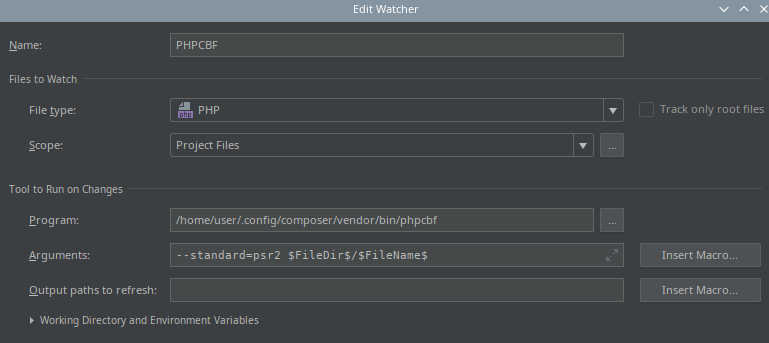

<!--#set var="title" value="Adab-ı PHP: PHPCS" -->
<!--#set var="canonical" value="yazilarim/adab-i-php-phpcs/" -->
<!--#include virtual="/header.html" -->

<div class="container container-post">
    <div class="div-post p-4 mt-md-5">
        <h1>Adab-ı PHP: PHPCS</h1>

        <p>PHPCS‘in ne olduğu, kurulumu, komut satırıyla kullanımı, Visual Studio Code ve PhpStorm ile entegrasyonun
            nasıl yapılacağından bahsetmeye çalışacağım.
        </p>
        <p>
            PHP, ilk olarak kişisel bir proje olarak doğdu. İlk zamanlardaki açılımı <strong>Personel Home Page</strong>‘di.
            Zamanla yaygınlaşarak, bir topluluk projesi halini aldı ve daha gösterişli bir açılım uygun görüldü:
            <strong>Hypertext Preprocessor</strong>.
        </p>
        <p>
            PHP’nin hızlı yükseliş ve gelişim sürecinde, dilin tasarımındaki hataların yanı sıra, bir kodlama standardı
            da yoktu. Bu açığı kapatmak adına PSR standartları geliştirildi. Bugün, yazdığınız kodun ciddiye alınmasını
            istiyorsanız, bu standartlara uymanızda fayda var.
        </p>
        <p>
            Bir geliştiricinin, kodlama standartlarını takip etmesi ve kodlama sürecinde hepsini uygulaması kolay
            olmayabilir. İşte PHPCS, bu noktada devreye girerek yazdığınız kodun, belirlediğiniz kodlama standartına
            uygun olup olmadığını denetliyor.
        </p>
        <p>
            PHPCS’in aynı kod çatısı altında, <strong>PHPCBF</strong> isimli bir de kardeşi var. PHPCBF, kodlarınızı
            denetlemekle
            kalmıyor, düzeltilebilir olanları da düzeltiyor.
        </p>

        <h2>PHPCS Kurulumu</h2>
        <p>
            Projelerimizden, kullanacağımı IDE’lerden erişilebilir olması için öncelikle PHPCS’i bilgisayarımıza
            kuralım. Kurulumu bir kaç şekilde yapabilirsiniz ancak ben Composer ile global kurulumu öneriyorum.
        </p>

<pre>
composer global require "squizlabs/php_codesniffer"
</pre>

        <p>
            İlgili paketler yüklendikten sonra, kurulumun başarılı olduğunu ve dosyanın global olarak erişilebilir
            olduğunu doğruluyorum.
        </p>

<pre>
$ phpcs --version
PHP_CodeSniffer version 3.3.0 (stable) by Squiz (http://www.squiz.net)
</pre>

        <p>
            Eğer sisteminizde komutun bulunamadığında dair hata mesajı alıyorsanız, Composer’ın kurulum dizinini,
            işletim sisteminizin PATH değişkenine ekleyiniz.
        </p>

        <h2>Komut Satırı ile Kullanımı</h2>
        <p>
            PHPCS’e, kodlarınızı denetlenmesi için bir dizini veya bir dosyayı parametre olarak gönderebilirsiniz. Ek
            olarak, kodların hangi standartlara göre denetleneceğine dair bir parametre de göndereceğiz. Yapacağımız
            örneklerde PSR-2 standardını temel alacağız.
        </p>
        <p>
            Aşağıdaki komut, EmailController.php dosyasını PSR-2 standartlarına göre denetler.
        </p>
        <pre>phpcs --standard=psr2 EmailController.php</pre>
        <p>
            PHPCS, bana bir rapor döndürüyor. Bu raporda, kod uyumluluğu ihlallerini açıklamalarıyla beraber gösteriyor.
            Raporun alt kısmında ise PHPCBF ile hangilerinin düzeltilebilir olduğunu gösteriyor.
        </p>
<pre>
FILE: EmailController.php
------------------------------------------------------------------
FOUND 6 ERRORS AND 6 WARNINGS AFFECTING 10 LINES
------------------------------------------------------------------
33 | WARNING | [ ] Line exceeds 120 characters; contains 123 characters
73 | ERROR | [x] Function closing brace must go on the next line following the body; found 1 blank lines
before brace
87 | WARNING | [ ] Line exceeds 120 characters; contains 137 characters
91 | WARNING | [ ] Line exceeds 120 characters; contains 161 characters
104 | WARNING | [ ] Line exceeds 120 characters; contains 123 characters
111 | WARNING | [ ] Line exceeds 120 characters; contains 123 characters
115 | ERROR | [x] Multi-line function call not indented correctly; expected 12 spaces but found 16
115 | ERROR | [x] Closing parenthesis of a multi-line function call must be on a line by itself
127 | WARNING | [ ] Line exceeds 120 characters; contains 121 characters
131 | ERROR | [x] Opening parenthesis of a multi-line function call must be the last content on the line
139 | ERROR | [x] Multi-line function call not indented correctly; expected 8 spaces but found 12
139 | ERROR | [x] Closing parenthesis of a multi-line function call must be on a line by itself
------------------------------------------------------------------
PHPCBF CAN FIX THE 6 MARKED SNIFF VIOLATIONS AUTOMATICALLY
------------------------------------------------------------------
</pre>

        <p>Şimdi, aşağıdaki komutla dosyamızı PHPCBF’ye gönderiyoruz.</p>
        <pre>phpcbf --standard=psr2 EmailController.php</pre>
        <p>PHPCBF, düzeltilebilir olan 6 adet kural ihlalini düzelterek bize sonucu gösteriyor.</p>
<pre>
PHPCBF RESULT SUMMARY
------------------------------------------------------------------
FILE FIXED REMAINING
------------------------------------------------------------------
/var/www/papernic/src/AppBundle/Controller/EmailController.php 6 6
------------------------------------------------------------------
A TOTAL OF 6 ERRORS WERE FIXED IN 1 FILE
------------------------------------------------------------------
</pre>
        <p>
            PHPCS ve PHPCBF’nin en basit kullanımı bu şekilde. Ancak PhpStorm gibi bir IDE ile ya da Visual Studio Code
            (bundan sonra Code olarak anılacak) çalışırken, komut satırına dönerek bu işlemleri yapmak zaman kaybı
            olacaktır. Bu yüzden çalışma ortamımız ile entegrasyonun nasıl yapılacağına bakalım.
        </p>

        <h2>Code ile PHPCS Kullanımı</h2>
        <p>İlk olarak PHPCS eklentisini kuruyoruz. Komut satırıyla kurulum için aşağıdaki komutu çalıştırmanız
            yeterli.</p>
        <pre>ext install ikappas.phpcs</pre>
        <p>
            Eğer PHPCS dosyası, sisteminizde global olarak erişilebilir değilse, eklentiye PHPCS dosyasının yolunu
            gösteren bir ayar satırı eklememiz gerekiyor. Uygulanmasını istediğimiz standardı da ikinci satırda
            belirttik.
        </p>
<pre>
{
    "phpcs.executablePath": "~/.config/composer/vendor/bin/phpcs",
    "phpcs.standard": "PSR2"
}
</pre>
        <p>
            Hepsi bu kadar. Dosyalarınızı Code ile açtıktan sonra ilgili PHPCS uyarılarını hem editörde hem de çıktı
            penceresinde görebileceksiniz.
        </p>
        <h2>Code ile PHPCBF Kullanımı</h2>
        <p>
            Eğer hata gösterimleri yetmiyor, çalıştığınız dosyanın PHPCBF tarafından otomatik olarak düzeltilmesini
            istiyorsanız, bunun için Code’un <strong>Tasks</strong> (Görevler) özelliğinden yararlanabilirsiniz.
        </p>
        <p>
            Projemin içinde oluşturduğum, aşağıdaki tasks.json dosyası, görevi her çalıştırdığımda dosyadaki kural
            ihlallerini düzeltecek.
        </p>
<pre>
{
    // See https://go.microsoft.com/fwlink/?LinkId=733558
    // for the documentation about the tasks.json format
    "version": "2.0.0",
    "tasks": [
        {
            "label": "phpcbf",
            "type": "shell",
            "command": "phpcbf --standard=psr2 ${file}",
            "key": "ctrl+h"
        }
    ]
}
</pre>

        <h2>PhpStorm ile PHPCS Kullanımı</h2>
        <p>
            Ayarlardan <strong>Code Sniffer</strong> bölümünü bularak, bir PHPCS konfigürasyonu tanımlamamız gerekiyor.
            Buradaki tek önemli nokta, dosya yolunu doğru tanımlamak olacaktır. Yolu tanımladıktan sonra, “Validate”
            bağlantısıyla PHPCS yolunu doğrulayabilirsiniz.
            
        </p>

        <p>
            Ayarları yapmanıza rağmen, hala editörde bir değişiklik yok çünkü “Inspections” bölümünden "Code Sniffer"
            incelemesini aktif hale getirmeniz ve istediğiniz kod standardını belirtmeniz gerekiyor.
            
        </p>

        <h2>PhpStorm ile PHPCBF Kullanımı</h2>
        <p>
            PhpStorm ile biraz daha işin kolayına kaçarak, dosyamızı her kaydettiğimizde PHPCBF ile otomatik
            düzeltilmesini sağlayalım. Bunun için, PhpStorm’un <strong>File Watchers</strong> (Dosya İzleyici)
            özelliğini kullanacağız.
        </p>
        <p>
            Ayarlarımızdan File Watchers bölümünü buluyoruz ve yeni bir izleyici tanımıyoruz. İzleyici tanımlarımı,
            üzerinde çalıştığım dosyayı izleyecek şekilde yaptım. Bunun için PhpStorm’un değişkenlerinden
            faydalanabilirsiniz.
            
        </p>
    </div>
</div>

<!--# include file="/footer.html" -->
